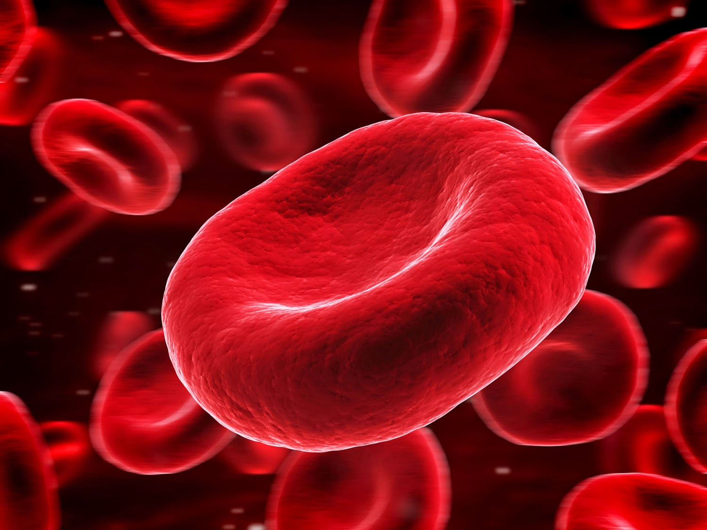

Middle School Biology

What is a living thing?

What is non-living thing?
7 Characteristic of Living Things
Feeding
All living organisms need to take substances from their environment to obtain energy, to grow and to stay healthy.
Movement
All living organisms show movement of one kind or another.
All living organisms have internal movement, which means that they have the ability
of moving substances from one part of their body to another.
Some living organisms show external movement as well - they can move from place to place by walking, flying or swimming.
Breath or Respiration
All living things exchange gases with their environment. Animals take in oxygen and breathe out carbon dioxide.
Excretion
Excretion is the removal of waste from the body. If this waste
was allowed to remain in the body it could be poisonous.
Humans produce a liquid waste called urine. We also
excrete waste when we breathe out. All living things need to remove waste from their bodies.
Growth
When living things feed they gain energy. Some of this energy is used in growth. Living things become larger and more complicated as they grow.

Sensivity
Living things react to changes around them. We react to touch, light, heat, cold and sound, as do other living things.
Reproduction
All living things produce young. Humans make babies, cats produce kittens and pigeons lay eggs. Plants also reproduce.
Many make seeds which can germinate and grow into new plants.
Types of Cells in the Body
Sterm Cells

Stem cells are unique cells of the body in that they are unspecialized and have the ability to develop into several
different types of cells. They are different from specialized cells, such as heart or blood cells, in that
they can replicate many times, for long periods of time. This ability is what is known as proliferation.
Unlike other cells, stem cells also have the ability to differentiate or develop into specialized cells for specific
organs or to develop into tissues. In some tissues, such as muscle or brain tissue, stem cells can even regenerate
to aid in the replacement of damaged cells. Stem cell research attempts to take advantage of the renewal properties
of stem cells by utilizing them to generate cells for tissue repair and the treatment of disease.
Blood Cells

Our blood is a fluid that is also a type of connective tissue. It is composed of blood cells and an aqueous
fluid known as plasma. Two major functions of the blood include transporting substances to and from our cells
and providing immunity and protection against
infectious agents such as bacteria and viruses. Blood is a component of the cardiovascular system. It is circulated
through the body via the heart and blood vessels
Fat Cells
Adipose tissue is a lipid storing type of loose connective tissue. Also called fat tissue, adipose is
composed primarily of adipose cells or adipocytes. While adipose tissue can be found in a number of places
in the body, it is found primarily beneath the skin. Adipose is also located between muscles and around internal
organs, particularly those in the abdominal cavity. The energy stored as fat in adipose tissue is used as a fuel
source by the body after the available energy acquired from carbohydrates is used up. In addition to storing fat,
adipose tissue also produces endocrine hormones which regulate adipocyte activity
and are necessary for the regulation of other vital bodily processes. Adipose tissue helps to cushion and protect organs,
as well as insulate the body from heat loss.
Skin Cells
The integumentary system consists of the largest organ in the body, the skin. This extraordinary organ system protects the
internal structures of the body
from damage, prevents dehydration, stores fat and produces vitamins and hormones
. It also helps to maintain homeostasis within the body by assisting in the regulation of body temperature and water balance.
The integumentary system is the body's first line of defense against bacteria, viruses and other microbes.
It also helps to provide protection from harmful ultraviolet radiation. The skin is a sensory organ in that it has receptors
for detecting heat and cold, touch, pressure and pain. Components of the skin include hair, nails, sweat glands, oil glands,
blood vessels, lymph vessels, nerves and muscles.
Endothelial Cells
Endothelial cells form the inner lining of cardiovascular
system and lymphatic system structures. Endothelial cells are
epithelial cells that form a thin layer of simple squamous epithelium known
as endothelium. Endothelium makes up the inner layer of vessels such as arteries,
veins, and lymphatic vessels. In the smallest blood vessels, capillaries and sinusoids,
endothelium comprises the majority of the vessel.
Blood vessel endothelium is continuous with the inner tissue lining of organs
such as the brain, lungs, skin, and heart.
Nerve Cells
Neurons are the basic unit of the nervous system and
nervous tissue. All cells of the nervous system are comprised of
neurons. The nervous system can be divided into two parts: the central
nervous system and the peripheral nervous system. The central nervous
system consists of the brain and spinal cord, while the peripheral nervous
system consists of sensory and motor nervous cells that run throughout the rest of the body.
Cancer Cells
Cancer cells are abnormal cells that reproduce rapidly,
maintaining their ability to replicate and grow. This unchecked cell
growth results in the development of masses of tissue or tumors. The tumors
continue to grow and some, known as malignant tumors, can spread from one
location to another. Cancer cells
differ from normal cells in a number or ways. Cancer cells don't experience
biological aging, maintain their ability to divide, and do not respond to
self termination signals.
The only person who is educated is the one who has learned how to learn and change.
All living organisms need to take substances from their environment to obtain energy, to grow and to stay healthy.
All living organisms show movement of one kind or another. All living organisms have internal movement, which means that they have the ability of moving substances from one part of their body to another. Some living organisms show external movement as well - they can move from place to place by walking, flying or swimming.
All living things exchange gases with their environment. Animals take in oxygen and breathe out carbon dioxide.
Excretion is the removal of waste from the body. If this waste was allowed to remain in the body it could be poisonous. Humans produce a liquid waste called urine. We also excrete waste when we breathe out. All living things need to remove waste from their bodies.
When living things feed they gain energy. Some of this energy is used in growth. Living things become larger and more complicated as they grow.
Living things react to changes around them. We react to touch, light, heat, cold and sound, as do other living things.
All living things produce young. Humans make babies, cats produce kittens and pigeons lay eggs. Plants also reproduce. Many make seeds which can germinate and grow into new plants.
Types of Cells in the Body
Stem cells are unique cells of the body in that they are unspecialized and have the ability to develop into several different types of cells. They are different from specialized cells, such as heart or blood cells, in that they can replicate many times, for long periods of time. This ability is what is known as proliferation. Unlike other cells, stem cells also have the ability to differentiate or develop into specialized cells for specific organs or to develop into tissues. In some tissues, such as muscle or brain tissue, stem cells can even regenerate to aid in the replacement of damaged cells. Stem cell research attempts to take advantage of the renewal properties of stem cells by utilizing them to generate cells for tissue repair and the treatment of disease.
Our blood is a fluid that is also a type of connective tissue. It is composed of blood cells and an aqueous fluid known as plasma. Two major functions of the blood include transporting substances to and from our cells and providing immunity and protection against infectious agents such as bacteria and viruses. Blood is a component of the cardiovascular system. It is circulated through the body via the heart and blood vessels
Adipose tissue is a lipid storing type of loose connective tissue. Also called fat tissue, adipose is composed primarily of adipose cells or adipocytes. While adipose tissue can be found in a number of places in the body, it is found primarily beneath the skin. Adipose is also located between muscles and around internal organs, particularly those in the abdominal cavity. The energy stored as fat in adipose tissue is used as a fuel source by the body after the available energy acquired from carbohydrates is used up. In addition to storing fat, adipose tissue also produces endocrine hormones which regulate adipocyte activity and are necessary for the regulation of other vital bodily processes. Adipose tissue helps to cushion and protect organs, as well as insulate the body from heat loss.
The integumentary system consists of the largest organ in the body, the skin. This extraordinary organ system protects the internal structures of the body from damage, prevents dehydration, stores fat and produces vitamins and hormones . It also helps to maintain homeostasis within the body by assisting in the regulation of body temperature and water balance. The integumentary system is the body's first line of defense against bacteria, viruses and other microbes. It also helps to provide protection from harmful ultraviolet radiation. The skin is a sensory organ in that it has receptors for detecting heat and cold, touch, pressure and pain. Components of the skin include hair, nails, sweat glands, oil glands, blood vessels, lymph vessels, nerves and muscles.
Endothelial cells form the inner lining of cardiovascular system and lymphatic system structures. Endothelial cells are epithelial cells that form a thin layer of simple squamous epithelium known as endothelium. Endothelium makes up the inner layer of vessels such as arteries, veins, and lymphatic vessels. In the smallest blood vessels, capillaries and sinusoids, endothelium comprises the majority of the vessel. Blood vessel endothelium is continuous with the inner tissue lining of organs such as the brain, lungs, skin, and heart.
Neurons are the basic unit of the nervous system and nervous tissue. All cells of the nervous system are comprised of neurons. The nervous system can be divided into two parts: the central nervous system and the peripheral nervous system. The central nervous system consists of the brain and spinal cord, while the peripheral nervous system consists of sensory and motor nervous cells that run throughout the rest of the body.
Cancer cells are abnormal cells that reproduce rapidly, maintaining their ability to replicate and grow. This unchecked cell growth results in the development of masses of tissue or tumors. The tumors continue to grow and some, known as malignant tumors, can spread from one location to another. Cancer cells differ from normal cells in a number or ways. Cancer cells don't experience biological aging, maintain their ability to divide, and do not respond to self termination signals.
The only person who is educated is the one who has learned how to learn and change.